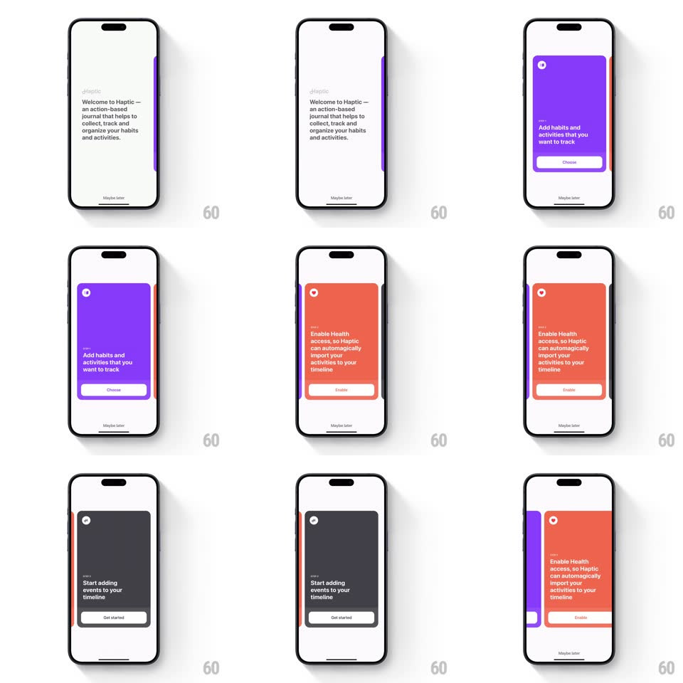

Media
Frame-by-frame

Rebuild this interaction 1:1: Haptic's onboarding card carousel - full-height cards (white Welcome, purple Add habits, orange Enable Health, dark Start adding events) swipe horizontally with the next card peeking at the edge, springy settles, and a per-card action button plus "Maybe later".

Rebuild this interaction 1:1: Haptic's onboarding card carousel - full-height cards (white Welcome, purple Add habits, orange Enable Health, dark Start adding events) swipe horizontally with the next card peeking at the edge, springy settles, and a per-card action button plus "Maybe later". ## Integration Integration: stack-agnostic spec - springs given as stiffness/damping, timed motions as duration + curve; map every value to your framework and animation library of choice. ## Scene Each card: small circular avatar/close glyph top-left, "STEP n" eyebrow, bold headline copy, a bottom pill button (Choose / Enable / Get started) and a "Maybe later" text link pinned below the card. Cards are colored (white, purple, orange, dark gray) with the next card's edge visible at the right. ## Motion spec Pattern: peeking card pager with spring settle. - Drag: the current card tracks the finger (1:1), its corners stay rounded; the next card slides in from the right edge already visible as a colored sliver that grows. - Release past ~35%: the outgoing card exits left (spring ~320/24, ~350ms) while the incoming card expands to full width; the card subtly overshoots and settles (scale 0.98 -> 1). - The bottom button and Maybe later stay pinned - only the card body and its copy travel. - The small circle glyph top-left crossfades its icon per step; STEP label counts up. - Edge resistance on the first/last card (rubber-band x^0.5). ## Calibration - The peek sliver is ~24px at rest - enough to read the next card's color, not its content. - Text inside cards is left-aligned with generous padding; cards never go full-bleed to screen corners. ## Reduced motion Cards crossfade; no drag translation needed for paging (buttons advance). ## Don't miss - Card color IS the step identity - the background behind the card stays the app's neutral gray. - Maybe later is present on every step, pinned outside the card.